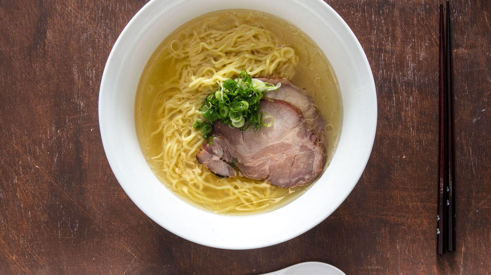

SHIO RAMEN

DESCRIPTION
Shio Ramen is a delicious soupy broth with noodles, coming from Japan. It is a delightful experience to make and eat and there are ways you can experiment with it to make it to your style.
INGREDIENTS
- Noodles
- 1/4 ounce kombu, or dried kelp (7g; about one 7- by 2-inch piece)
- 1/4 ounce dried shiitake mushrooms (7g; about 2 to 3 mushrooms)
-
1 ounce (30g) shaved katsuobushi (dried bonito) flakes
- First, Place water, kombu, and shiitakes in a small saucepan and place over medium-high heat. Bring to a bare simmer, then shut the heat off; take care not to let the water boil, as the kombu will make the dashi bitter. Add katsuobushi and let steep for 3 minutes. Strain dashi into a heatproof bowl. You can reserve the kombu, shiitakes, and katsuobushi for another use, such as making a niban dashi.
- Bring a large pot of water to a boil. Combine dashi with chicken stock in a large saucepan and place over medium-high heat. Bring blended broth to a simmer; take care not to let it boil, as it will become cloudy.
- Place 2 tablespoons (30ml) shio tare in each of 4 warmed serving bowls. Ladle around 1 1/2 cups (350ml) blended broth into each bowl. Taste broth for seasoning; it should be quite salty. Add more broth or more tare to each bowl to adjust the seasoning.
- Drain noodles and divide among serving bowls. Spoon 1 to 2 tablespoons (15 to 30ml) aromatic oil over noodles in each bowl of soup. Add any toppings you have on hand, such as marinated egg or chashu, to each bowl. Garnish with scallions and serve immediately.